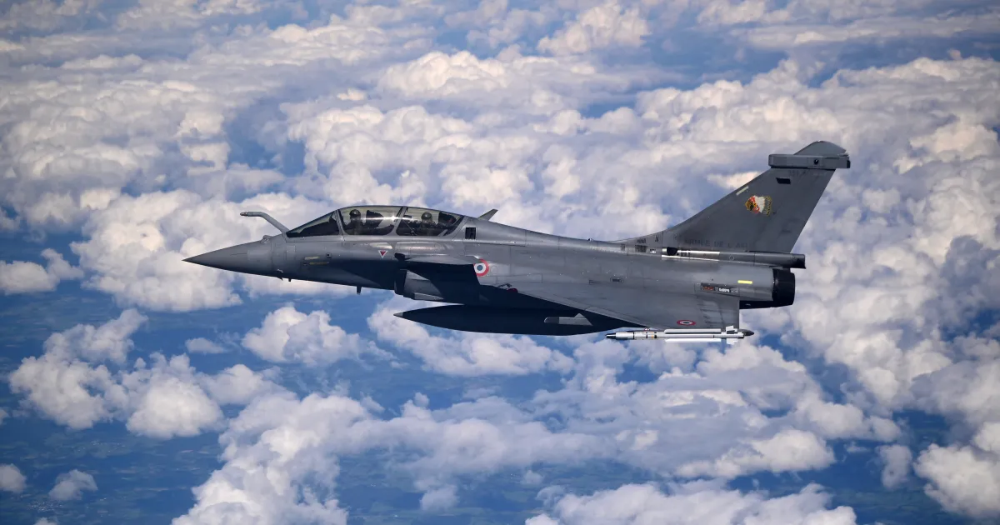

The Rafale aircraft features a maximum take-off weight of 24.5 tonnes, an overall empty weight of 10 tonnes, and supports an external load of 9.5 tonnes. Its dimensions include a length of 15.30 m, a wing span of 10.90 m, and a height of 5.30 m. The aircraft holds 4.7 tonnes of internal fuel and up to 6.7 tonnes of external fuel. In terms of performance, it has a top speed of 1.8 Mach at high altitude, a service ceiling of 50,000 ft, a ferry range of 3,700 km, and requires a landing ground run of 450 m (1,500 ft).